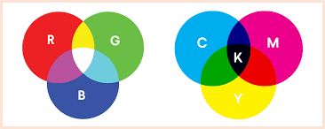

Er zijn 3 kleurmodellen: RGB, PMS en CmYk. De twee belangrijkste zijn RGB en CMY-K. RGB staat voor red, green, blue. Je komt het vooral tegen op beeldschermen. CMYK staat voor cyaan, magenta, yellow, key en wordt gebruikt voor printen en drukken. Het grootste verschil is de manier waarop het werkt en dat is niet zo gek. CMYK gebruk je dus fysiek bij printen en drukken, niet op je beeldscherm, en RGB gebruik je dus wel op je beeldscherm.
Een ander verschil in de werking is dat rood, groen en blauw overlappen en er daardoor licht ontstaat en CMYk juist het tegenovergestelde doet, licht afnemen.
De termen pixels en resolutie staan met deze modellen in verband. “Elke hoofdkleur heeft 8 bits. ‘Omdat de kleur van een pixel is opgebouwd uit rood, groen en blauw wordt het totaal aantal mogelijke kleuren per pixel 256 x 256 x 256 = 16,7 miljoen kleuren.’
Resolutie is het aantal gebruikte pixels in een afbeelding. Het staat in verband met de scherpte, het detail en de grootte van een afbeelding. Er zijn 2 resoluties: de beeldscherm- en de afdrukresolutie.
De beeldschermresolutie is de pixelafmeting van een afbeelding. Het aantal dots per inch van de afdrukresolutie drukt dit uit in het aantal pixels per inch. Je kunt hiermee de resolutie van de afdruk op papier aangeven.
Hoe hoger de resolutie is, hoe meer detail de afbeelding kan hebben, maar hij neemt hierdoor wel meer opslagruimte in.
